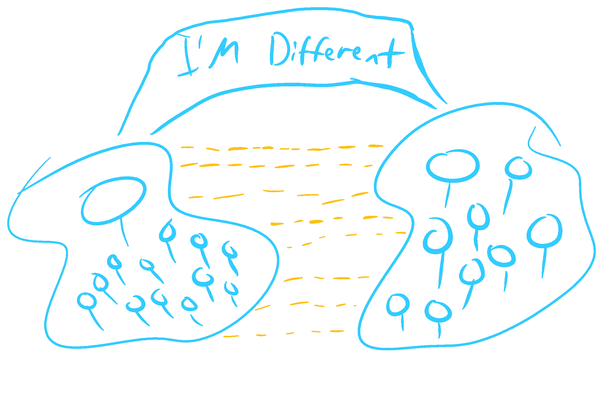

Dear people,
If you’re a teacher, or even a student, you’ve likely heard this a million times. Everyone learns differently! You have visual learners, kinesthetic learners, aural learners, and some reader and writer type learners. A student can even be a mix of all the above! Taste all the flavors, so much diversity! Aren’t they all so yummy? Oh and that’s just VARK, but there are like 70 different schemes out there! I’m getting excited!
Wait a minute… 70? I have to learn 70 different learning styles just to hold a class? Are you kidding me? Excuse my French, but what the hell?
I hope you realize, that I do not have a storage bin filled with 70 different lesson plans for every concept I teach. I also hope no poor soul would do such a thing, because that is a lot of wasted paper.
But ok, let’s ditch the 70 number. Let’s go by what VARK says, which is that you’ve got 4 primary different learning styles, and an odd mix of all of them. Oh hell, I still have to have 4.75 different drafts for everything I do!
I’ll tell you what’s more absurd. Imagine teaching derivatives using kinesthetic methods. Or teaching solving equations using diagrams. Or teaching reading aurally. If these methods seem reasonable to you, then please email me at amrojjeh@outlook.com. I’d love to talk.
“Ok Mr. Diversity Denier, are you telling me that you believe in only ONE learning style?”
John, that’s contradictory! A style implies there’s more than one variation, so I can’t believe in a single style. Instead, most people learn the same way. And by most, I mean most to the point where it’d be equivalent to saying most people have two arms. There is no questionnaire that determines your “arm style.” You either have two arms, or you don’t. I agree, it’s not as fashionable.
However, it’s functional. I won’t delve into research papers and evidence, that’s boring talk. If you want boring talk, you can read more here1.
Instead, I want to talk about why it should be acceptable that most people learn the same way, disregarding the evidence. Because let’s face it, if the idea is unappealing, it’s likely that only a few people would accept it, regardless of the evidence.
Suppose for a second that you are teaching algebra to class of say, 30 students. Generally speaking, algebra requires writing, as well as graphs, as well as some visuals. Anything that requires writing will naturally be followed up by reading as well. Notice the approach we’re taking. Instead of asking what do the students prefer, we’re asking, what does the subject require? And the follow up question would be, how do we teach the material to make it intuitive?
This is the beauty of a ubiquitous learning style. Teaching a concept well is now an objective standard, and as science seeks a similar objective truth, this type of mindset encourages us to find the optimal way to teach. Supposing that everyone has a different learning style, then how could any teacher improve over time? Any one who’s been teaching long enough is gonna meet new faces, and should they start from scratch every semester?
And how come we have classical textbooks, and internationally recognized professors, such as Carl Sagan, Feynman, or even Khan or Organic Chemistry Tutor? Or the upvoted Quora answers, or the ones on Stack Exchange?
It’s not a dystopia because we all learn and think alike. It’s a blessing, because it establishes a community of teachers that operate scientifically, and one where feedback can be given because practices are mostly objective. We know analogies can help, but we also know the difference between good analogies and bad analogies. Good analogies are effective with everyone, regardless of style. Good imagery goes long away too. And teachers can teach freely, as they are not confined to questionnaire results, but only by their own creativity and experience.
So, my final words would be to not teach based on whatever VARK type your student has. Teach your own away and what you find to be the most effective. Realize that the most effective means that most students should be able to grasp your explanation. Also realize, that it truly is a scientific process, and as such, it’s iterative.
I hope this long rant wasn’t a dread to read, and perhaps you learned something! If you have any questions, comments, or you just want to spit on my face, feel free to shoot a private note or comment. If you don’t have an account, you know where to find my email.
Regards,
Amr Ojjeh
1: https://cft.vanderbilt.edu/guides-sub-pages/learning-styles-preferences